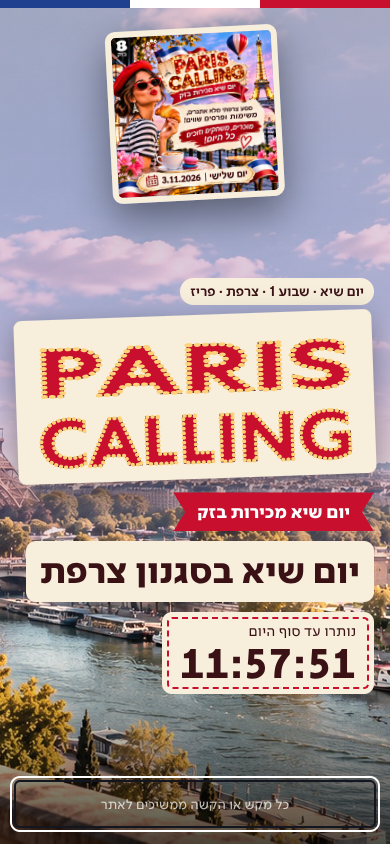
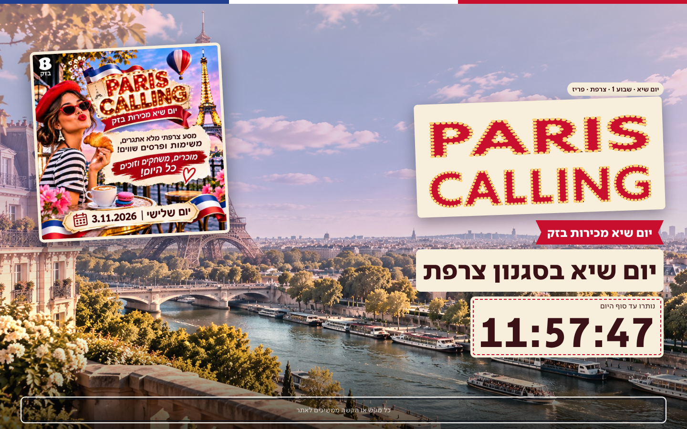
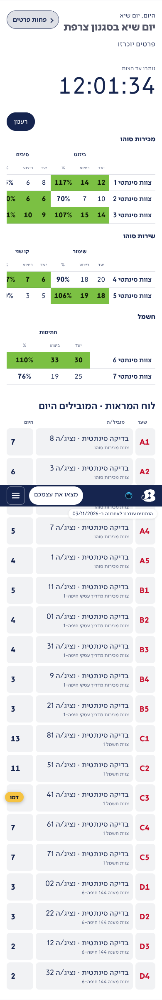
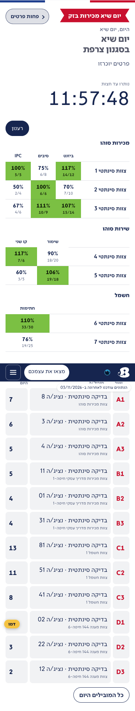
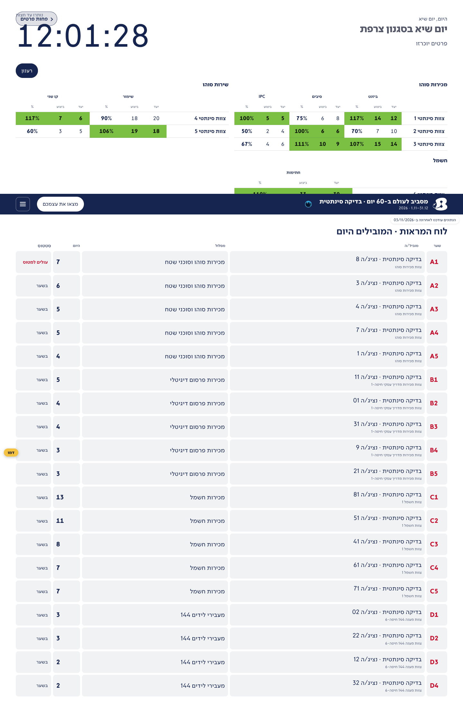
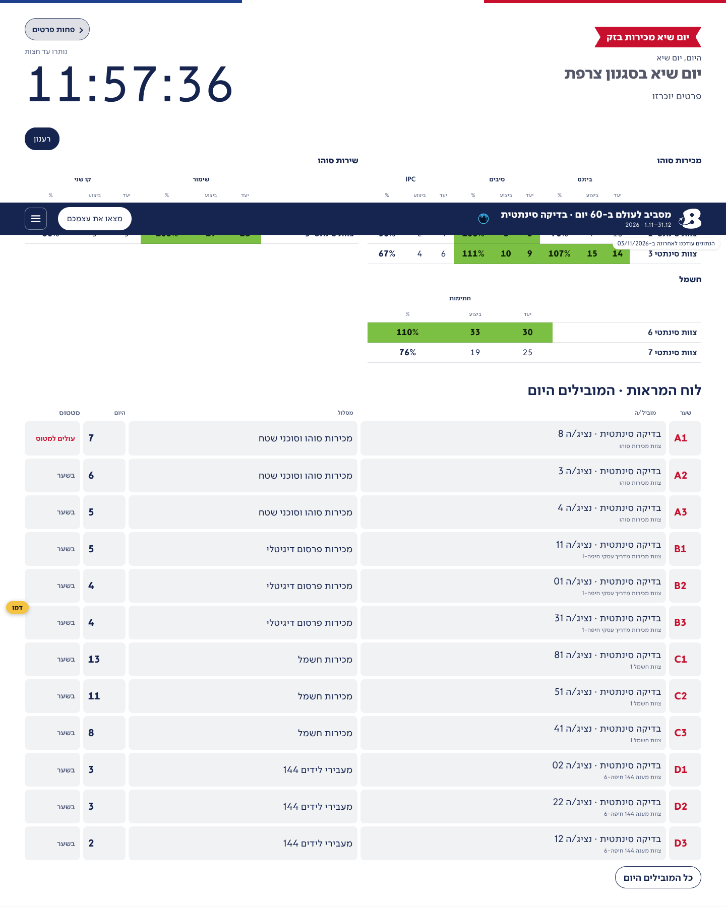

מסך יום השיא (פריז) · לפני ואחרי
מסך הפתיחה של יום השיא ולוח הסטטוס של היום, כפי שהעובדים יראו ביום שלישי 3.11. נתונים סינתטיים, בלי שמות אמיתיים. בשאר הימים האתר כחול, בלי שינוי.
- בטלפון לוח הסטטוס עמודה אחת לכל מדד: האחוז גדול, הביצוע מתוך היעד מתחתיו. בלי גלילה לצדדים.
- לוח המראות בדף: שלושת המובילים בכל תחרות, וכל המובילים בלחיצה על "כל המובילים היום".
- במחשב כפתור "פחות פרטים" לא יושב עוד על השעון.
- הפס בצבעי הדגל והסרט "יום שיא מכירות בזק" גם בכותרת של יום השיא.
מסך הפתיחה (Flight Deck)

טלפון · 390

מחשב · 1440
לוח יום השיא · טלפון

לפני · Flight Deck · 390

אחרי · Flight Deck · 390
אחרי · Mission · 390
לוח יום השיא · מחשב

לפני · Flight Deck · 1440
אחרי · Flight Deck · 1440

אחרי · Mission · 1440